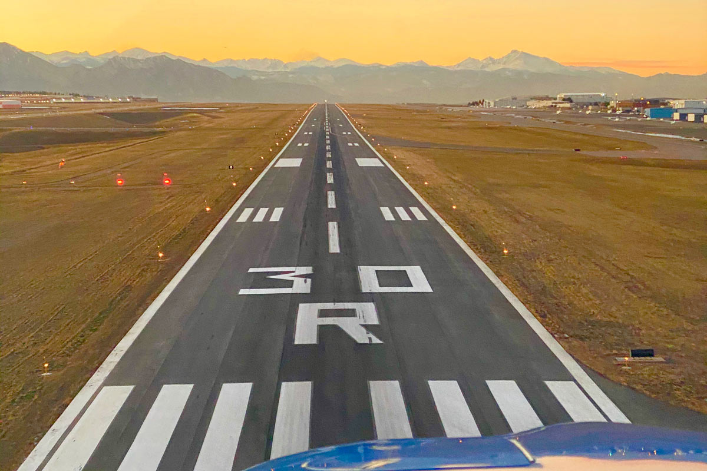

Quiz sulle definizioni

Il primo volo a motore della storia fu effettuato nel:

La portanza NON è influenzata da:

Una pista orientata verso 58 gradi da Nord avrebbe come identificatore:

Quale tipo di aeroplano si utilizza per un volo intercontinentale?
La pressione dell'aria: